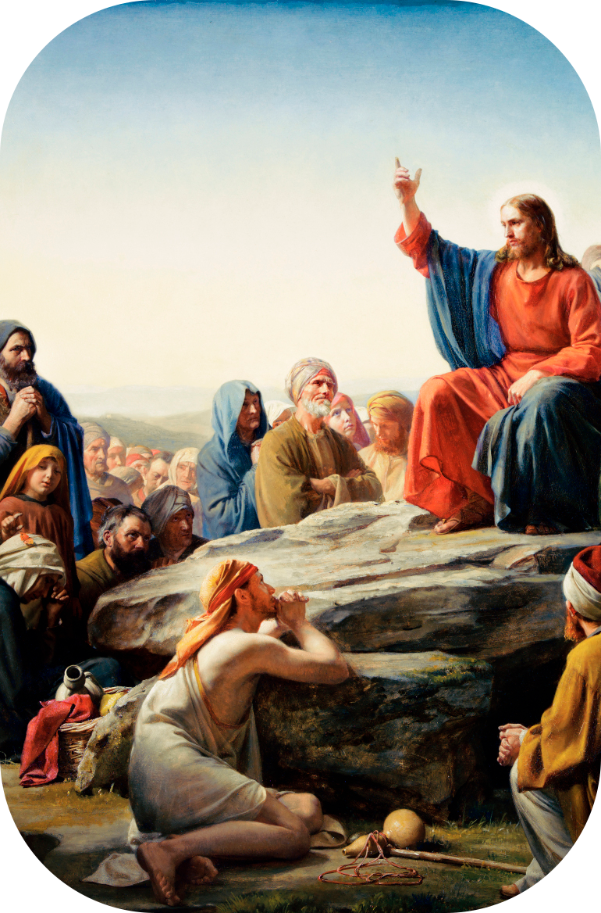

TRABALHOS
- O primeiro fator será o Nascer
- O segundo fator será o Morrer
- O terceiro fator será o Sacrifício pela Humanidade
Primeiro Fator: NASCER
Entende-se por Nascimento Espiritual a Criação dos Corpos Existenciais do Ser. Dizemos criação dos Sete Corpos, pois devem criar-se igual que se criou nosso corpo físico, no sexo.
Para nascer é necessário ter cônjuge estável com qual possamos trabalhar no sexo de forma permanente. Deve ser um cônjuge, do sexo oposto, não pode ser vários(as), pois isto adulteraria o trabalho. O cônjuge deve estar disposto(a) a colaborar-nos e conhecer o trabalho que se vai fazer.
Para este trabalho devemos valorizar a Energia Criadora Sexual, pois com ela faremos toda a criação.
O lugar onde se praticará o sexo é o leito nupcial ou altar; este lugar é muito especial e devemos cuidá-lo muito para que não se misturem outras forças. O quarto ou a alcova deverá estar em magníficas condições de asseio e ventilação, livre de ruídos (músicas estrondosas) e televisores. Não pode haver mais pessoas dormindo no mesmo quarto.
O Supra-sexo não se pode praticar em qualquer lugar. É necessário ter um quarto destinado à isto.
Antes de iniciar a prática de Nascimento devemos fazer uns preparativos:
- Conjuração do Belilim e Círculo Mágico (para ficar protegidos das forças do Mal).
- Súplica ao Pai e a Mãe Divina para que nos assistam durante a prática.
- Carícias entre o casal para conseguir uma magnífica lubrificação da Yoni.
- Penetração do falo dentro da vagina (lingam dentro da Yoni).
- Uma vez unidos sexualmente são necessários a Concentração, a Imaginação e a Vontade.
- Procedimento respiratório para a transmutação da matéria em energia:
- Inalação (20 segundos): imaginando a entrada do ar pelas narinas até os pulmões, e em seguida levá-lo até as glândulas sexuais.
- Retenção (20 segundos): imaginando o ascenso de um fio dourado desde o cóccix até a glabela
- Exalação (20 segundos): mantralizando lento e alongadamente IIIII, AAAAA, OOOO vogal por vogal, repetindo todo o procedimento respiratório para cada vogal.
- A prática se prolongará durante todo o tempo que o casal desejar, porém deverão retirar-se sem ejacular, sem ter orgasmos ou espasmos, e sem derramar a Energia Criadora Sexual.
- Não se praticará senão uma vez na noite.
- Com paciência, prudência e perseverança se irá avançando vértebra por vértebra e corpo por corpo.
Segundo Fator: MORRER
A Morte Psicológica se refere a liberação da Essência, ou Energia Criadora Sexual, que nestes momentos se encontra presa pelo eu psicológico ou as formas de ser de si mesmo.
Para poder iniciar o processo de Morte Psicológica devemos aprender a auto-observarnos. E isto resulta ser o mais difícil pela mecanicidade na qual nos encontramos.
É necessário saber diferenciar os atos do Ego, os atos da Personalidade e os atos da Consciência.
O que se pode observar no mundo interior?
- Os diferentes pensamentos;
- As conversas internas entre os eus;
- As emoções agradáveis;
- As emoções desagradáveis;
- Os estados de ânimo em que nos encontramos;
- As reações mecânicas;
- Tudo o que nos altera; qualquer situação do mundo físico.
Quando a pessoa descobre qualquer destas manifestações, nos tornamos conscientes do que sucede interiormente, logo pedimos à Mãe Divina que desintegre o defeito ou eu que se manifestou.
Na medida em que trabalhamos com seriedade com este procedimento iremos liberando a Essência, equilibrando nossos centros e despertando a Consciência. Cada vez veremos detalhes menores e insignificantes, o que nos permitirá ver o avanço.
O sentido da Auto-observação irá aguçando-se progressivamente na medida em que o usemos, até que despertemos completamente.
Exemplo: vou pela rua dirigindo tranquilamente, ao chegar na esquina outro veículo se atravessa. Se neste instante não me identifico com o que está me passando, poderei observar tudo o que sucede no meu mundo interior; vejamos:
- aparece um eu que me diz que lhe grite “estúpido”;
- outro, “insulte-o”;
- outro, “quem você acha que é?”;
- outro, “alcance-o!”;
- observo que tenho vontade de brigar;
- observo que o meu Centro Emocional está contraído;
- observo que um eu quer vingar-se;
- me pergunto quem o ensinou a dirigir;
- penso, ”tomara que se arrebente!!”;
- outro me diz que poderia ter riscado o veículo;
- não posso deixar de pensar nisto;
- “que irresponsável!!!”, diz outro;
- outros eus fazem comentários do que aconteceu;
- sinto ressentimento pelo que passou.
Tempo depois continuo recordando a cena:
- ainda tenho ira;
- não posso esquecer o que aconteceu;
- me sinto debilitado.
Cada uma destas manifestações está produzida por um eu diferente e devo suplicar a Mãe Divina que o elimine.
Outro exemplo:
Passa uma mulher muito bela perto de mim. Se me autoobservo descubro eus na minha cabeça que a estão idealizando, se observo meu Centro Emocional me sinto enamorado ou atraído por ela, se observo meu Centro Instintivo e o Sexual noto uma atividade morbosa inconfundível. O que tenho que fazer? Ao observar que a estou idealizando peço morte para este detalhe. Ao observar que estou me enamorando peço morte para este sentimento. E ao observar a sensação instintiva peço morte para esse eu. Se qualquer deles persiste continuo pedindo a Mãe Divina que o elimine até que não aflore nenhum.
A este procedimento se denomina Morte em Marcha, e implica estar todo o dia em vigília para poder dar-me conta de cada detalhe.
Se me sento um instante para refletir sobre os distintos eventos do dia e os estados que me encontrava, posso fazer novos descobrimentos e continuar pedindo a Mãe Divina que me elimine cada coisa que vá compreendendo. A este procedimento se o denomina Meditação Reflexiva e nos ajuda a liberar grandes quantidades de Consciência.
Terceiro Fator: SACRIFÍCIO PELA HUMANIDADE
O Sacrifício pela Humanidade é levar este conhecimento desinteressadamente a toda a humanidade, sem nenhum tipo de distinção de raça, cor, riqueza, pobreza, posição social, etc.
O Conhecimento deve ser entregue sem receber nada em troca, completamente gratuito, do contrário não seria sacrifício e sim comércio. Ninguém teria com o que pagar este conhecimento.
A Sabedoria é o princípio de tudo. Se não a recebemos, morreremos ignorantes da razão mesma de existir. Se refletirmos nisto e valorizamos o Conhecimento que temos perceberemos a responsabilidade que isto representa. Imaginar que todos os nossos irmãos dormem, sem saber sequer porque existem, produz terror.
O Conhecimento há de ser entregue puro e limpo, sem acrescentar nem extrair nada, sem mesclar com conhecimentos pseudoesotéricos ou subjetivos.
Condições para sacrificar-nos:
- Devemos entregar o Conhecimento gratuitamente.
- Devemos entregá-lo à todo o mundo.
- Devemos entregá-lo puro, sem agregar outras coisas.
- Não devemos tirar ou esconder nada, pois isto seria adultério.
- Não devemos misturar com outros conhecimentos.
Algumas razões para sacrificar-nos pela humanidade:
- A razão de ser do Ser é o mesmo Ser.
- “Desegoistizar-nos”, deixar de ser egoísta.
- Uma obra de Amor se alimenta com Amor.
- Cada eu tem a sua própria dívida, se não temos com que pagar nos estancaremos.
- Devemos o karma de sete existências, se pretendemos auto-realizar-nos devemos pagar a vista.
- Quando alguém deve muito, precisa ter bons ingressos.
- Quando uma pessoa se sacrifica pela humanidade, recebe Dharma.
- O Sacrifício gera méritos do coração para poder avançar.
- Do que se dá se recebe. Quem nada dá nada recebe.
- Aquele que dá sabedoria, recebe sabedoria.
- Quem tem e não dá, do que tem, até o pouco que tem, lhe será tirado.
- Os méritos do coração nos permitem avançar no trabalho de Nascimento.
- Se alguma pessoa ensina, cada vez que ensina compreende algo melhor.
- O egoísta avança muito lentamente, se é que avança.
- Cada vez que ajudamos ao Pai a dar o conhecimento, Ele nos ensina algo.
- Cada vez que repetimos o temário o compreendemos melhor.
- Se estamos ensinando, vamos criando um Centro de Gravidade ao redor do Trabalho Esotérico.
- Se deixamos de ensinar, nos esfriamos e nos estancamos nos outros dois Fatores.
- Os distintos eus querem que esqueçamos este trabalho. Se não ensinamos, isso passará.
Diferentes formas de sacrificar-nos pela humanidade:
- Convidando familiares, amigos e conhecidos;
- Convidando aos desconhecidos;
- Distribuindo panfletos e colando cartazes;
- Fazendo publicidade ou campanha publicitária;
- Preparando-se para ensinar;
- Fogueando-se para perder o temor que não nos deixa fazer;
- Fazendo introduções nas salas;
- Ditando conferências;
- Abrindo salas para entregar o Conhecimento;
- Preparando pessoas para que continuem ensinando;
- Fogueando a todo o pessoal que se prepara;
- Motivando as pessoas para que iniciem a prática dos Três Fatores;
- Dirigindo os grupos que se tem organizado;
- Despertando para poder orientá-lo.
Se comprovamos a força que se recebe ao entregar este conhecimento, começaremos a formar um grupo que nos permita ter um Centro de Gravidade no Trabalho Esotérico Gnóstico.
Ao longo do ciclo de conferências nos aprofundaremos sobre estes e outros temas para praticar e comprovar por nós mesmos sem ter que aceitar ou rechaçar este conhecimento.